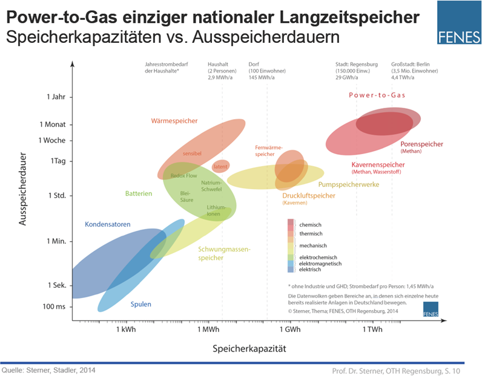

Die Energiedichte des Wasserstoffs
Es wird oft davon geredet, dass die Energiedichte des Wasserstoffs zu gering sei. Aber stimmt das? Die häufigste Ursache hierfür ist die Verwechslung von volumetrischer und gravimetrischer Energiedichte. Wasserstoff hat eine Energiedichte von 0,53 kWh pro Liter bei 200 Bar. Allerdings hat es in Bezug auf Masse eine Energiedichte von 33,3 kWh pro Kilogramm. Im Vergleich dazu hat Erdgas bei einem Druck von 200 Bar eine Energiedichte von 2,58 kWh pro Liter und in Bezug auf Masse eine Energiedichte von 13,9 kWh pro Kilogramm. Man sieht, dass Erdgas bei 200 Bar knapp 5 mal die Energiedichte von Wasserstoff hat. Allerdings beläuft sich dies auf die volumetrische und nicht die gravimetrische Energiedichte. Wasserstoff hat also fast eine 2 ½ mal höhere gravimetrische Energiedichte als Erdgas.
Pauschal kann man also nicht sagen, dass Wasserstoff eine geringere Energiedichte hat!
Wasserstoff Speicherung und Transport
Wasserstoff Autos von BMW: 1990 hat BMW ihr erstes Wasserstoffauto hergestellt. Ein erstes Bedenken bei dem auf -253 Grad gekühlten Wasserstofftank, war, dass es zu viel Permeationsverluste gäbe. Permeationsverluste sind Verluste, die sich auf ausdampfen belaufen. Also war die Gefahr, dass zu viel Wasserstoff durch Verdampfung verloren gehen würde, denn bei einem halben Tank, nach 9 Tagen würde man das Auto "schieben" müsse, weil der Wasserstoff verdämpft sei. Allerdings gab eine heutige Studie eine Antwort auf dieses scheinbare Problem: Die Permeationsverluste, also die Ausdampfverluste wären nicht hoch genug, um einen signifikanten Unterschied zu machen.
Außerdem produziert BMW, während viele andere Hersteller sich auf batteriebetriebene Autos konzentrieren, weiter Wasserstoff Autos. Denn bei BMW glaubt man, dass sich Brennstoffzellen, wie jene im BMW iX5 sich durchaus lohnen können. [1]
Lagerung von Wasserstoff im Labor
Wasserstoff wird in Druckgasflaschen gelagert, welche in einem gut belüfteten Bereich stehen müssen. Diese Gasflaschen müssen durch Sicherheitsschilder und Warnschilder gekennzeichnet werden, da Wasserstoff ein hoch entzündliches Gas ist. Deshalb müssen elektrische Anlagen und Geräte in der Nähe nach bestimmten Vorschriften einhalten. Sehr wichtig ist letztlich auch, dass Wasserstoff Gasflaschen nicht mit anderen Gasflaschen gelagert werden. [2]
Speicher für elektr. Strom aus eE und fossilen Quellen

100% grüner Wasserstoff nahe Dortmund
Holzwickede ist eine Gemeinde nahe Dortmund, welche nun mit grünem Wasserstoff durch eine Erdgasleitung versorgt wird. Dieser klimaneutrale Wasserstoff ist von der Qualität 3.0 (Also eine Reinheit von 99,9%). Die Leitung wird durch einen Wasserstoffspeicher gespeist, worin der grüne Wasserstoff mit 42 bar gespeichert wird. Westnetz hatte erstmals einen Zusatz von mehr als durch die Norm vorgeschriebenen 10% Wasserstoff im Erdgas erprobt, ohne dass Probleme eintraten. Außerdem traten keine neuen Proben mit 100% Wasserstoff als Ersatz für Erdgas auf. Also war es klar, dass man das Erdgasnetz mit 100% grünem Wasserstoff befüllen konnte.
[3]
Der geringe Gesamtwirkungsgrad des Wasserstoffs
Der Gesamtwirkungsgrad von Wasserstoff setzt sich aus mehreren Wirkungsgraden zusammen:
[4]
Ökostromerzeugung: ~70 % (Wirkungsgrad variiert nach Anteilen von der Form der Erzeugung (Wasserkraft, Windkraft, Solar))
Alkalische Elektrolyse: 80 %
Kompression auf 1 000 bar: 88%
Transport: 99 %
PEM-Brennstoffzelle: 70 %
Gesamtwirkungsgrad: 34 %
Vergleich: Wirkungsgrade von Benzin:
[4]
Well-To-Tank: 82 % (Einzelwerte von Produktion bis Fahrzeug nicht vorhanden)
Verbrennung: 18% (realer Stadtverkehr)
Gesamtwirkungsgrad: 15 %
Wasserstoff als Energieträger mit mehr Lagerkapazität
Wasserstofftechnologie ist zu teuer
Der Platinanteil in der PEM-Brennstoffzelle wurde drastisch verringert und ein FCV (Fuel Cell Vehicle) mit 120 kW Leistung hat gerade mal ca. 5g mehr als in einem Benziner, dafür allerdings recyclebar. Außerdem ist die Erzeugung von Wasserstoff in Regionen mit starker Sonnenbestrahlung (Spanien/(Nordafrika) und starkem Wind (Nordsee/Alaska) deutlich wirtschaftlicher und in Zukunft ist es zu erwarten, dass je mehr es eingesetzt wird, desto geringer wird der Preis. [5]
Produktionskosten von verschiedenen Wasserstofftypen für 2019 und Prognosen für 2030 und 2050
Preis in ct/kWh H2
 [6]
[6]
Grenzübergangspreis von Erdgas
Monatliche Entwicklung seit 2013 in ct/kWh
 [7]
[7]
Der Grenzübergrangspreis pro Terajoule Erdgas lag im April 2021 bei 4 481,73 Euro. Dieser steigt in gerade mal 11 Monaten um ca. 330 Prozent, also um mehr als 10 000 Euro auf 14 756,39 Euro pro Terajoule Erdgas. Einen Monat später, im April 2022, lag der Preis bei 17 941,65 Euro. Dementsprechend 21,6 Prozent über dem Preis im März und ca. 300 Prozent über dem Preis von einem Jahr davor, im April 2021. Also lag der Preis pro kWh Erdgas im April 2021 bei 1,6 Cent und gerade mal ein Jahr später bei 6,46 Cent.
[8]
Auf längere Zeit gesehen kann man Prognosen entnehmen, dass das Erdgas, je nach Szenario, 2 bis 6,6 ct/kWh kosten wird. Zum Vergleich: die Produktionskosten von Wasserstoff werden nach Prognosen zwischen 6 und 12 ct/kWh kosten.
[9]
Außerdem würden sich die Kosten, um das Gasnetz H2-ready zu machen auf rund 45 Milliarden Euro innerhalb eines Zeitraums von 30 Jahren belaufen. Also 1,5 Milliarden pro Jahr, was ca. einem viertel der bisherigen routinemäßigen Ersatzinvestitionen entspricht. Zum Vergleich dazu betrugen die Differenzkosten der EEG-Umlage in den Jahren von 2015-2020 mehr als 20 Milliarden Euro.
[10]